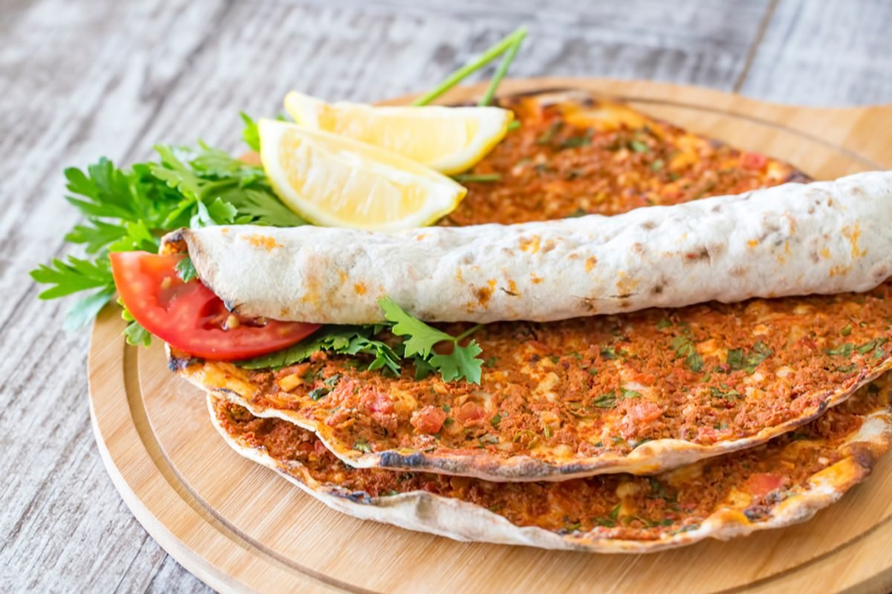

Lahmacun

Lahmacun is a popular on-the-go Turkish food.
When you visit Turkey, you'll see people walking the bustling streets of Istanbul, lahmacuns in hand, wrapped up like burritos.
To serve lahmacun wraps, all you need is a squeeze of fresh lemon juice on top. Add a few slices of red onions, fresh mint leaves, and maybe a few radish slices.
Wrap up and enjoy!
Ingredients
- ½ sweet red pepper, cored, cut into chunks
- 1 shallot, halved
- 2 garlic cloves, peeled
- ½ oz fresh parsley leaves with some stem
- 7 oz ground lamb or ground beef
- 1 tsp smoked paprika
- 1 tsp ground allspice
- ½ tsp ground cumin
- ½ tsp Aleppo-style pepper
- ½ tsp ground cinnamon
- ½ tsp cayenne pepper
- ½ tsp salt
- 4 tbsp tomato paste
- 2 tbsp Private Reserve Greek extra virgin olive oil
- Lemon wedges for later
Recipe Instructions
- Heat oven to 450 degrees F. Adjust oven rack to the middle. (or see stove-top instructions in notes)
- Prepare the meat mixture. In the large bowl of a food processor, fitted with blade, add red peppers, shallot, garlic, and parsley. Pulse a few times to chop. To the mixture, add ground lamb (or beef). Season with spices and salt. Add tomato paste and extra virgin olive oil. Now pulse again until well-combined (about 8 to 10 pulses.)
- Prepare two large rimmed baking sheets lined with parchment paper (you'll be using these to bake the Lahmacun in batches.)
- Divide the pizza dough into 4 equal balls (about 2 oz each.) Working with one ball of dough at a time, place on a floured surface. Using a rolling pin, roll dough out into as thin as you can to a disk that's about 8 or 9 inches in diameter.
- Assemble Lahmacun. Place one flatbread disk on one of the prepared pans. Reshape as needed. Spoon 3–4 tablespoon topping onto dough and spread topping evenly to edges, leaving a thin boarder.
- Bake in heated oven for about 5 to 7 minutes or until dough and meat are fully cooked (dough will be a little crusty around the edges.)
- Repeat steps 5 and 6 with the remaining dough.
- Squeeze a little lemon juice on top. Serve Lahmacun hot or at room temperature. See notes below for how to serve.
Home